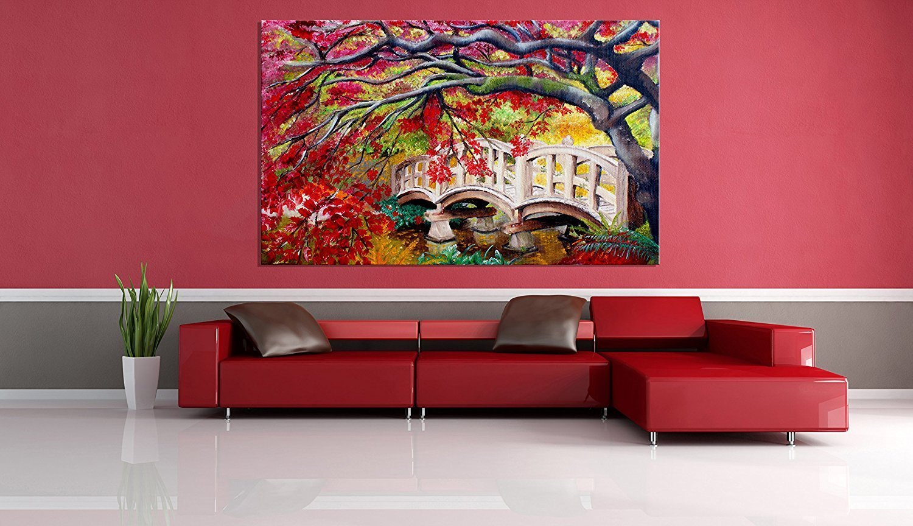

Welcome to pod
Peste 90.000 de imagini gratuite cu Copaci și Natura - Pixabay
2020.10.01 20:45Explorează Autentificare Join Media Fotografii Ilustrații Vectori Filme Alegerea Editorului Popular Images Popular Videos Community Blog Forum Artists Camere foto About Întrebări frecvente Termeni Confidenţialitate Despre noi API Language Čeština Dansk Deutsch English Español Français Indonesia Italiano Magyar Nederlands Norsk Polski Português Română Slovenčina Suomi Svenska Türkçe Việt ไทย Български Русский Ελληνική 日本語 한국어 简体中文 Autentificare Join Încarcă Fotografii Ilustrații Vectori Filme ✖ ‹ › Căutare sigură Populare Cele mai recente Viitoare Populare ✓ Alegerea Editorului Imagini Imagini ✓ Fotografii Grafică vectorială Ilustrații Filme Orientare Orice orientare ✓ Orizontal Vertical Categorie
90.296 Imagini gratuite de Copaci
Imagini înrudite: natura peisaj pădure copac toamna dispoziţie flori verde frunze copaci 1561 1475 246 Avenue Copaci Departe 3621 2856 628 Rutier Pădure Sezon 2724 2496 436 Drum Grinzi Calea 3326 2681 639 Japoneză Cherry Copaci 1273 1198 239 Copaci Magnolia 1214 935 264 De Protecţie A Mediului 1153 1113 116 Departe Pod Lemn 2677 2216 411 Cartea Vechi Nori 1267 1218 166 Compunerea Femeie 3299 2643 750 Primăvară Arbore Flori 654 939 57 Pădure Ceaţă Natura 1485 1489 294 Avenue Copaci 821 932 116 Dimineaţa Ceaţă 733 643 175 De Iarnă Iarnă Peisaj 862 849 160 Dark Hedges Armoy 1483 1282 153 Copac Natura Lemn Kahl 544 669 78 Pădure Departe 1730 1402 251 Câine Lup Scheunătură 403 583 27 Pădure Misty 2425 2043 404 Toamna Red Sezon 874 864 95 Apus De Soare Soare 1219 1054 139 Apus De Soare Copac 718 648 83 Banca De Apă Barcă 1553 1595 197 Porumbel Pasăre Animale 1128 1246 169 Cherry Tree 634 616 68 Natura Copac Dawn 1596 1377 243 Arbore Câmp Calm 1623 1341 213 Arbore Pisică Siluetă 538 361 61 De Iarnă Zăpadă Firs 1107 1089 188 Natura Pădure Soare 1232 1099 140 Copac Singuratic Arbore 523 645 58 Pădure Copaci 414 477 44 Copaci Pădure 468 606 51 Dimineaţa Ceaţă 855 1111 167 Cherestea Lemn 2277 2030 343 Pod Aur Lumină Mistic 867 694 99 Copac De Iarnă Bruma 386 388 58 Copaci Pădure 298 403 37 Pădure Ceaţă 307 276 92 Topuri De Copac Arbori 291 259 88 Lane Arbore 2178 1577 291 Natura Apele Lac 301 453 27 Copaci Peisaj Copac 560 482 112 Fiat Fiat 500 Auto 387 323 119 Meteora Rock 313 326 68 Copaci Calea Traseu 350 376 43 Dawn Rutier Ceaţă 446 430 32 Apple Roşu Mere Roşii 332 396 23 Iarnă Zăpadă Casă 429 381 72 Copac 492 533 75 Panoramă Rural Peisaj 200 215 35 Arbori De Foioase Pădure 657 661 109 De Protecţie A Mediului 366 394 66 Pădure Ceaţă Copaci 1649 1580 255 Beach 316 355 28 Pădure Drumeţii 316 262 50 Peisaj Pădure Copaci 292 281 32 Apele Natura Lac Râu 470 465 48 Lago Di Limides Dolomiţi 256 287 42 Natura Pădure Muşchi 290 235 105 Pădure Soare Cald 917 937 107 Trunchi De Copac 448 461 61 Apple Roşu Mână Livada 754 798 85 Toamnă Avenue Departe 559 554 98 Măsline Copac Arbore 345 369 43 Apple Roşu Mere Roşii 318 391 37 Pădure Arbori Om 894 803 174 Împădurite Rutier 251 322 21 Lumina Pădure Departe 90 48 25 Arbori Baldachin Copac 1017 1052 175 Lemn Scoarță De Copac 766 910 88 Rază De Soare Pădure 534 493 120 Stejar Copac 166 261 17 Bloom Mireasă Nuntă 250 234 36 Soare Apus De Soare 231 247 27 Copaci Pădure De Brad 275 262 41 Panoramă Apus De Soare 526 471 64 Cada Frunzele Muşchi 272 355 18 Zăpadă Iarnă Pădure 330 289 23 Apple Roşu Red Apple 384 340 80 Plimbare 644 719 79 Copac Avenue 239 236 75 De Iarnă Dawn Secretul 206 230 41 Răsărit De Soare 377 355 35 Apele Natura Munte Lac 511 575 51 Natura Copac Ceaţă 242 240 53 Pădure Lac Natura 238 223 77 Cabană Alpină Drumeţii 437 407 69 Apple Blossoms Măr 234 250 71 Pin Pădure 266 276 71 Tuscany Peisaj Pădure 94 55 18 Castel Avenue Copaci 623 569 80 Peisaj Quairaing Scoţia 751 1052 133 Flori Creanga Corolă 469 434 67 Japoneză Ciresi Flori 581 445 87 Migdale Floare 246 318 24 Pădure Arbori În Sus 260 293 27 Dawn Copaci Departe 318 204 79 Laponia Iarnă Zăpadă 754 561 108 Apus De Soare Copac Următoarea pagină › 90.296 Imagini gratuite de Copaci ▲